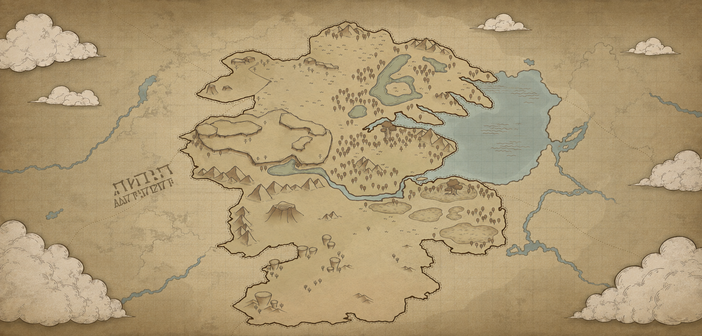

艾瑟瑞亚大陆全图

地理概况
艾瑟瑞亚（Aetheria）是一片古老而神秘的奇幻大陆。从地图上可以看出，这片土地被巨大的内陆湖泊分为几个主要区域。左侧散落着奇异的符文遗迹，而云层环绕的边缘暗示着这是一片被迷雾隔绝的未知领域。
地图中最为显著的地标包括东部的深蓝巨湖，其水系延伸至大陆的脉络中；以及西南部广袤的沙漠与高耸的岩柱群。中部的森林与连绵的山脉为游侠和冒险者提供了天然的庇护所。
未解之谜
在大陆的西侧隐约可见一些古老的符文（如图中左侧的文字），学者们认为这是第一纪元留下的远古坐标，可能指向某个沉睡在地下的古代兵器或是失落神庙。